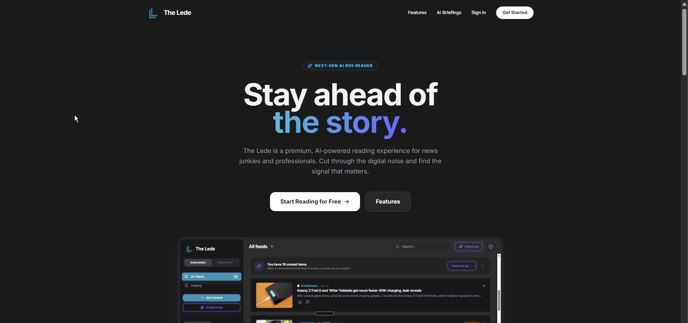
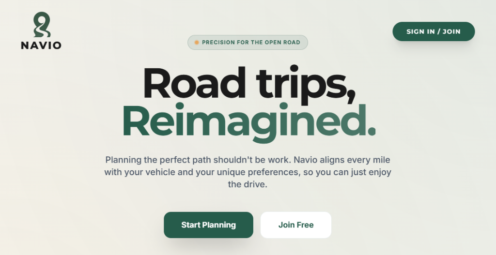
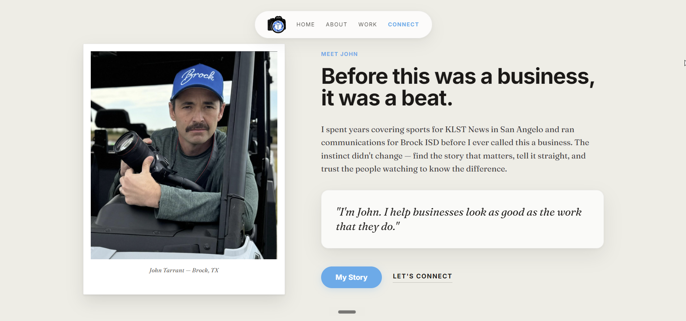
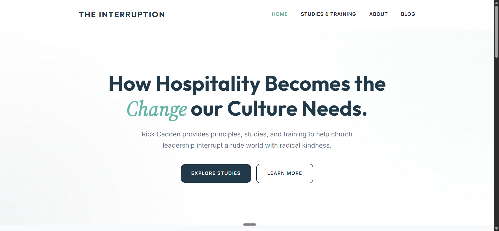

The Lede
An AI-powered news briefing engine built entirely on the Cloudflare edge. Gemini reads hundreds of feeds every morning and writes the briefing — so you catch what matters without the scroll.
Visit Site →Applied Flux · Asheville, NC
I'm Ricky Cadden, and Applied Flux is my one-person studio. I build fast websites for businesses that serve their community, automation for teams drowning in manual work, and search strategy for a world where AI answers first. Twenty years of doing this for brands like Sprint, RadioShack, and Sabre — now available without the org chart.
See what I do →What I do
A real website, live in weeks, starting at $2,500.
If you run a locksmith shop, an HVAC company, a landscaping crew — you need a website that brings in work, not a platform to learn. I build clean, fast websites that drive business results, then keep them running for $500 a month so you never think about hosting again.
How it works →Pipelines that erase the busywork.
Workflow automation wired into real processes — categorization, research, content parsing — and agents for the high-volume repetitive stuff nobody should be doing by hand. I built The Lede, an AI news engine that reads hundreds of sources every morning, so I know where AI actually earns its keep and where it's just theater.
Your stack, finally talking to itself.
CRM and pipeline repair — leaky funnels, dirty data, email sequences that don't fire when they should. Process mapping that turns "ask Karen, she knows" into a documented, repeatable system. Integrations that make the tools you already pay for work together.
Visible to people. Legible to machines.
Audits covering classic search plus Generative Engine Optimization — how ChatGPT, Gemini, and AI Overviews see your brand, or fail to. Content architecture built for both readers and crawlers, and fractional advisory when you need a senior technical brain without making a senior technical hire.
The work

An AI-powered news briefing engine built entirely on the Cloudflare edge. Gemini reads hundreds of feeds every morning and writes the briefing — so you catch what matters without the scroll.
Visit Site →
Road trips, reimagined. Navio aligns every mile with your vehicle and your tastes — vibe-aware routing and curated Gems, so you can just enjoy the drive.
Visit Site →
Story-first video and marketing for businesses worth knowing about. Built on the principle that your business should look as professional as the work you actually do.
Visit Site →
Principles, studies, and training for church leaders interrupting a rude world with radical kindness. Built to serve a community that runs on conviction, not conversion metrics.
Visit Site →Who's behind this
I'm Ricky Cadden — twenty years building digital strategy and systems for brands like Sprint, RadioShack, and Sabre, with the receipts to match: a 1,200% lift in digital engagement here, 750,000 automated messages a week there. I live in Asheville, North Carolina, with my wife, two daughters, and a dog named Baxter.
Applied Flux is deliberately small. When you email, I answer. When something breaks, the person who built it fixes it — no account managers, no handoffs, no "let me check with the team."
Flux, if you're curious, is the stuff that makes solder hold — the unglamorous layer that makes two things actually join. That's the job.
I work with a handful of clients at a time — whether that's a service business that needs its first real website or an ops team running on hope and spreadsheets. Tell me what's broken.
hello@appliedflux.com